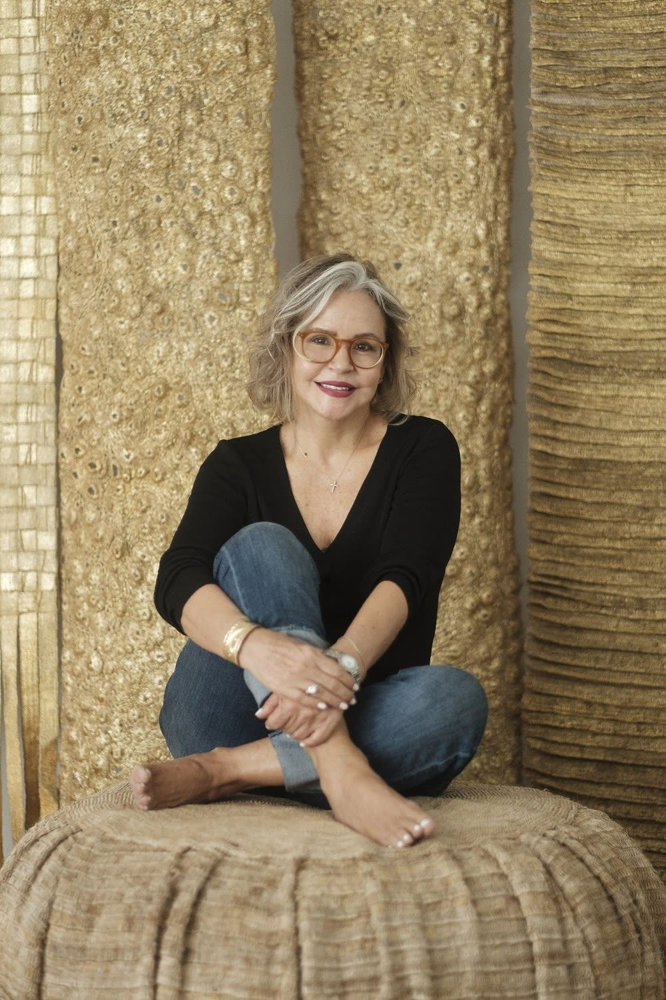

Artists · 10 works
Mónica Urquijo

Mónica Urquijo is a Colombian textile designer, artist, and social entrepreneur whose practice brings together contemporary design, traditional craftsmanship, natural fibers, and community-based production. Working from Barranquilla, she creates textile art, furniture, accessories, and objects for interior spaces through an ongoing exploration of material, texture, color, and handwoven form.
Nature and the cultural traditions of the Colombian Caribbean are central to her creative language. Urquijo works with plant-based fibers and locally sourced materials, including fibers that might otherwise be treated as agricultural waste. Through experimentation with weaving, braiding, knots, bands, and other artisanal processes, she transforms these materials into highly tactile pieces that combine organic irregularity with contemporary design.
Her work is inseparable from a sustained commitment to social entrepreneurship. Through Textiles Mónica Urquijo and initiatives developed with Asociación Arte-Sana, she has trained and created economic opportunities for hundreds of women artisans in communities across Colombia’s Atlántico region, including women who are heads of household and survivors of displacement and armed conflict. Her collaborative model preserves and renews textile knowledge while strengthening the artisans’ productive independence and access to national and international markets.
Urquijo’s designs have achieved international recognition and have been produced for brands including Ralph Lauren. Her work has also been presented through international design platforms and fairs, including Maison & Objet in Paris, where Colombian craftsmanship, sustainable materials, and contemporary design were introduced to a global audience.
In 2006, Urquijo was recognized as Social Entrepreneur of the Year by Dinero magazine and the Schwab Foundation. Her practice continues to demonstrate how design can connect material innovation, cultural identity, environmental awareness, and social transformation.